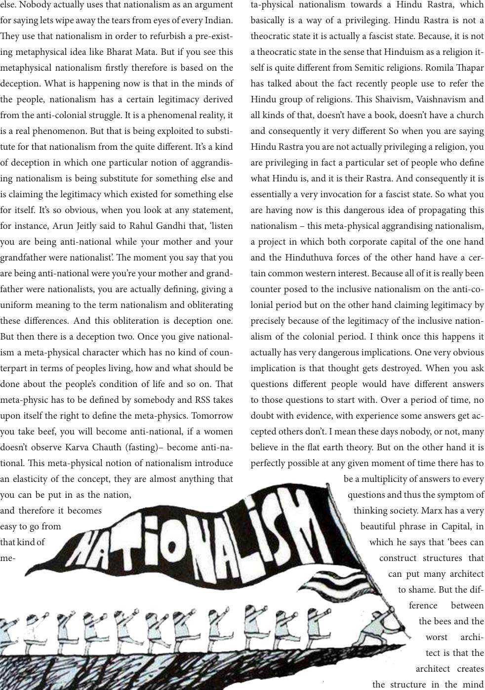

else. Nobody actually uses that nationalism as an argument
for saying lets wipe away the tears from eyes of every Indian.
ey use that nationalism in order to refurbish a pre-exist-
ing metaphysical idea like Bharat Mata. But if you see this
metaphysical nationalism rstly therefore is based on the
deception. What is happening now is that in the minds of
the people, nationalism has a certain legitimacy derived
from the anti-colonial struggle. It is a phenomenal reality, it
is a real phenomenon. But that is being exploited to substi-
tute for that nationalism from the quite dierent. It’s a kind
of deception in which one particular notion of aggrandis-
ing nationalism is being substitute for something else and
is claiming the legitimacy which existed for something else
for itself. It’s so obvious, when you look at any statement,
for instance, Arun Jeitly said to Rahul Gandhi that, ‘listen
you are being anti-national while your mother and your
grandfather were nationalist’. e moment you say that you
are being anti-national were you’re your mother and grand-
father were nationalists, you are actually dening, giving a
uniform meaning to the term nationalism and obliterating
these dierences. And this obliteration is deception one.
But then there is a deception two. Once you give national-
ism a meta-physical character which has no kind of coun-
terpart in terms of peoples living, how and what should be
done about the people’s condition of life and so on. at
meta-physic has to be dened by somebody and RSS takes
upon itself the right to dene the meta-physics. Tomorrow
you take beef, you will become anti-national, if a women
doesn’t observe Karva Chauth (fasting)– become anti-na-
tional. is meta-physical notion of nationalism introduce
an elasticity of the concept, they are almost anything that
you can be put in as the nation,
and therefore it becomes
easy to go from
that kind of
me-
ta-physical nationalism towards a Hindu Rastra, which
basically is a way of a privileging. Hindu Rastra is not a
theocratic state it is actually a fascist state. Because, it is not
a theocratic state in the sense that Hinduism as a religion it-
self is quite dierent from Semitic religions. Romila apar
has talked about the fact recently people use to refer the
Hindu group of religions. is Shaivism, Vaishnavism and
all kinds of that, doesn’t have a book, doesn’t have a church
and consequently it very dierent So when you are saying
Hindu Rastra you are not actually privileging a religion, you
are privileging in fact a particular set of people who dene
what Hindu is, and it is their Rastra. And consequently it is
essentially a very invocation for a fascist state. So what you
are having now is this dangerous idea of propagating this
nationalism – this meta-physical aggrandising nationalism,
a project in which both corporate capital of the one hand
and the Hinduthuva forces of the other hand have a cer-
tain common western interest. Because all of it is really been
counter posed to the inclusive nationalism on the anti-co-
lonial period but on the other hand claiming legitimacy by
precisely because of the legitimacy of the inclusive nation-
alism of the colonial period. I think once this happens it
actually has very dangerous implications. One very obvious
implication is that thought gets destroyed. When you ask
questions dierent people would have dierent answers
to those questions to start with. Over a period of time, no
doubt with evidence, with experience some answers get ac-
cepted others don’t. I mean these days nobody, or not, many
believe in the at earth theory. But on the other hand it is
perfectly possible at any given moment of time there has to
be a multiplicity of answers to every
questions and thus the symptom of
thinking society. Marx has a very
beautiful phrase in Capital, in
which he says that ‘bees can
construct structures that
can put many architect
to shame. But the dif-
ference between
the bees and the
worst archi-
tect is that the
architect creates
the structure in the mind